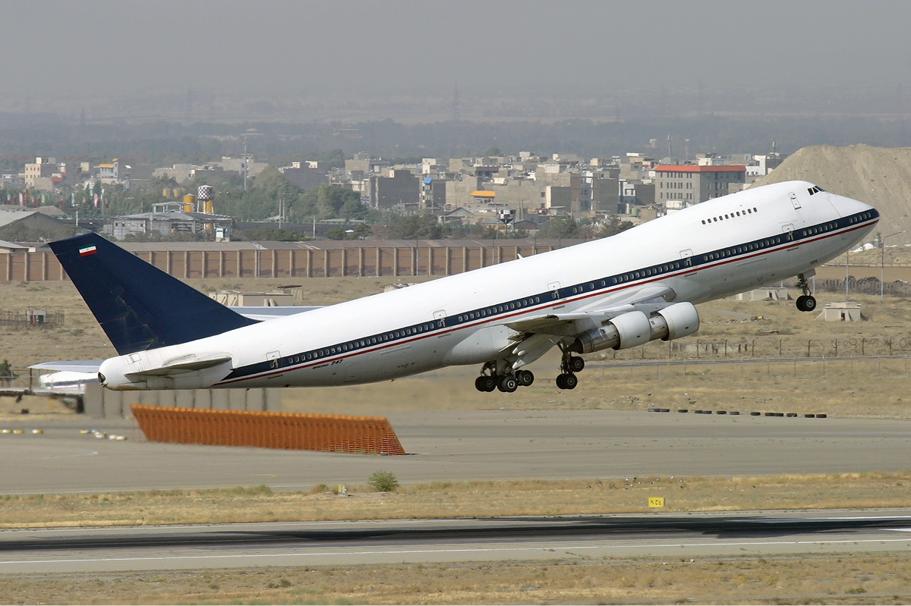

Cea mai mare flotă de avioane Boeing 747 din lume va fi scoasă imediat din uz
17 iulie 2020
British Airways a anunțat că va scoate din uz întreaga sa flotă de avioane Boeing 747,
din cauza scăderii activității în contextul pandemiei de COVID-19, informează BBC.
Compania britanică este cel mai mare operator de avioane 747 din lume, având 31 de bucăți în flota sa.
"Cu mare tristețe confirmăm propunerea de a retrage imediat din uz întreaga flotă de Boeing 747", a declarat un purtător de cuvânt British Airways pentru BBC.
Companiile aeriene din întreaga lume au fost grav afectate de pandemia de coronavirus și de restricțiile de circulație introduse de țări.
"Este puțin probabil că avioanele 747 vor mai efectua vreodată zboruri comerciale pentru British Airways din cauza cererii scăzute pe fondul pandemiei de COVID-19", a adăugat oficialul BA.
British Airways, deținută de International Airlines Group (IAG), a anunțat că avioanele vor fi retrase imediat din uz. Aeronavele Boeing 747 reprezintă 10% din flota BA.
Compania plănuise inițial să le retragă în 2024, însă a avansat data din cauza scăderii cererii.
Predecesorul British Airways, BOAC, a început să opereze avioane Boeing 747 în anii '70.
După eliminarea aeronavelor 747, BA va opera mai multe zboruri pe avioane mai moderne precum Airbus A350 sau Boeing 787 Dreamliner.
Avioanele Boeing 747 au contribuit la popularizarea zborurilor comerciale în anii '70, aniversând 50 de ani de activitate în februarie 2019. Compania americană Boeing a anunțat că oprirea producției de 747 în urmă cu un an de zile
Cum se vopseste un Boeing 747?
16 iulie 2020
Vopsirea unui avion necesită chiar până la 13 zile de muncă bine organizată, conform Airlinestravel. Avionul este dat prima oara cu o culoare deschisa iar apoi se vopseste propriu-spus.
In videoclipul de mai jos veti vedea cum se vopseste un Boeing 747 din schema Northwest Airlines in Delta Air Lines.
Care sunt cele mai vechi 747?
3 iulie 2020

Productia de 747 a inceput in 1968. De atunci, unele companii aeriene si-au retras aeronavele mai vechi, altele le-au pastrat din cateva motive (financiare, fiabilitate, etc.). Dar la momentul actual care sunt cele mai vechi 747 in functiune? Sa aflam.
Cel mai vechi 747 care mai zboara
Cel mai vechi 747 care zboara e un 747-100, mai exact EP-AJT si a fost al 5-lea avion care a iesit de pe linia de productie.
Primul de la TWA
Urmatoarea aeronava din clasament e EP-AJT. Prima oara a zburat cu TWA, fiind inregistrat ca N93101. Acum acesta zboara pentru Fortele aeriene din Iran.
Dreamlifter-urile, mai degraba...reciclate
Si avioanele Dreamlifter, folosite de Boeing ca avioane de transport pentru a aduce piese ca aripi, fuselaje si motoare pentru aeronavele aflate in productie, au fost convertite din batrane 747-400. Cel mai vechi dintre ele este N249BA, avand peste 30 de ani. A zburat pentru China Airlines aproximativ 15 ani înainte ca Boeing să o preia.
Cel mai vechi in serviciu comercial
Cel mai vechi 747 in serviciu de pasageri zboara pentru Mahan Air, cu inregistrarea EP-MNB. Aceasta aeronava are 31 de ani si a zburat prima oara cu United Airlines. Acest 747-400 a stat ceva timp la sol inainte ca Mahan Air sa il preia in 2009.